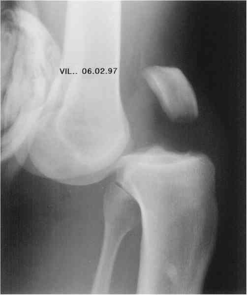

Bienvenue Sur Medical Education
Luxations : genou
Spécialité : traumatologie /
Points importants
-
Rechercher les lésions vasculaires éventuelles :
-
pouls pédieux et tibial postérieur
-
pouls capillaire
-
retour veineux
-
Rechercher les lésions neurologiques (sciatique poplité externe)
-
Appeler impérativement le chirurgien orthopédiste et le chirurgien vasculaire en cas de lésion vasculaire associée
Présentation clinique / CIMU
SIGNES FONCTIONNELS
-
Douleur
-
Angoisse
-
Impotence fonctionnelle du membre atteint
-
Genou de « Polichinelle » (pantin désarticulé)
CONTEXTE
- pouls pédieux et tibial postérieur
- pouls capillaire
- retour veineux
Présentation clinique / CIMU
SIGNES FONCTIONNELS
- Douleur
- Angoisse
- Impotence fonctionnelle du membre atteint
- Genou de « Polichinelle » (pantin désarticulé)
CONTEXTE
Circonstances de survenue
-
Il s'agit souvent d'accident à haute vélocité :
- accident de la route (moto+++)
- accident de ski
- accident de Rugby...
- Mécanisme en hyperextension, parfois choc direct sur la face postérieure du genou (luxations antérieures pures)
- Choc direct sur la tubérosité tibiale antérieure (luxations postérieures pures)
- Choc direct sur la face latérale (luxation latérale) ou sur la face médiale du genou (luxation médiale)
- Combinaison d'un mouvement de valgus-rotation-externe (luxations antéro-latérales et postéro-latérales) et varus-rotation-interne (luxations antéro-médiales et postéro-médiales)
EXAMEN CLINIQUE
_916
- - -
Examen clinique du genou
Luxations antérieures pures

_566
Photo
Luxation antérieure du genou
Luxations postérieures pures
_567
Photo
Luxation antéro-latérale du genou
_568
Photo
Luxation antéro-latérale du genou
_569
Photo
Luxation postéro-latérale du genou
_570
Photo
Luxation postéro-latérale du genou
Luxations latérales ou médiales
Luxations rotatoires
_571
Photo
Artériographie pré-opératoire normale d'une luxation du genou
Auteur(s) : Jean-Jacques BANIHACHEMI, Dominique SARAGAGLIA
Signes paracliniques
Diagnostic étiologique
Diagnostic différentiel
Traitement
Surveillance
Devenir / orientation
CRITERES D'ADMISSION
Bibliographie